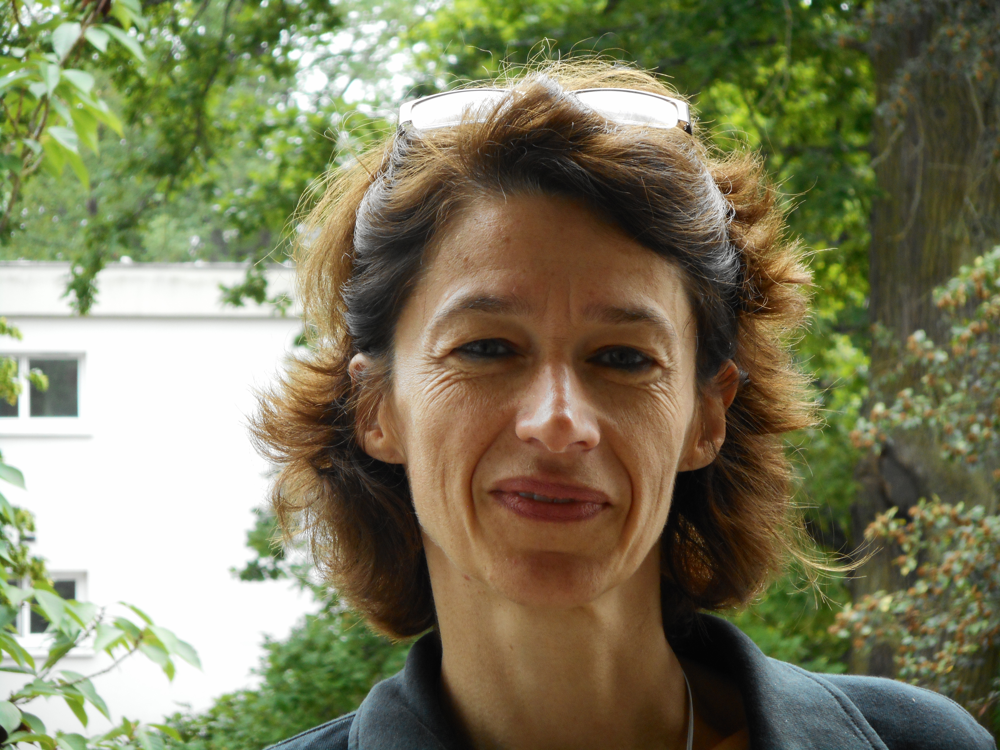

About me - I am a Professor at Université Paris-Saclay, conducting my research within the SATIE laboratory, where I co-lead the SICOIA group (Multi-sensor Signals, Computational Imaging, and Uncertainties in Learning) with Emanuel Aldea. My work centers on Trustworthy AI and the development of robust and calibrated models capable of leveraging imperfect data from complex physical systems, particularly applied to cultural heritage. Alongside my research, I am a faculty member at the IUT d’Orsay. I received my PhD in 1999 and my HDR in 2015.
M. Hadj-Ali, F. Alberge. "Risk-Controlled Semantic Value for Multi-Label Hierarchical Selective Classification". Submitted to WACV 2027.
M. Hadj-Ali, F. Alberge . "From Hierarchical Backoff to Reliable Open-World Inference". Proceedings of the 37th British Machine Vision Conference (BMVC), Lancaster, UK, november 2026.
M. Hadj-Ali, F. Alberge . "Hierarchical Prompt-Aware Zero-Shot Out-Of-Distribution Detection". Proceedings of the 33rd International Conference on Image Processing (ICIP), Tampere, Finland, September 2026.
M. Ossonce, P. Duhamel, F. Alberge . Détection des Données Hors Distribution : Une Approche Basée sur un Auto-Encodeur Variationnel Structuré". Actes du GRETSI, Strasbourg, France, Août 2025.
E. Dadalto Câmara Gomes, F. Alberge, P. Duhamel, P. Piantanida, "Combine and Conquer: A Meta-Analysis on Data Shift and Out-of-Distribution Detection", Transactions on Machine Learning Research, 2024.
A. Altieri, M. Romanelli, G. Pichler, F. Alberge, P. Piantanida, "Beyond the Norms: Detecting Prediction Errors in Regression Models", ICML Proceedings, 2024 (accepted as a spotlight - spotlight acceptance rate : 3.5%).
M. Ossonce, P. Duhamel, F. Alberge, Adequate structuring of the latent space for easy classification and out-of-distribution detection", Proceedings of the 32nd European Signal Processing Conference (EUSIPCO), Lyon, France, 2024, pp. 1776–1780.
E. Dadalto, F. Alberge , P. Duhamel, P. Piantanida. "Igeood: An Information Geometry Approach to Out-of-Distribution Detection". 10th International Conference on Learning Representations (ICLR), Virtual-only Conference, Avril 2022
E. Dadalto Câmara Gomes, F. Alberge, P. Duhamel, P. Piantanida, "Igeood: An Information Geometry Approach to Out-of-Distribution Detection", NeurIPS DistShift Workshop, 2021.
F. Alberge, "Deep Learning Constellation Design for the AWGN Channel with Additive Radar Interference", IEEE Transactions on Communications, vol. 67, no. 2, 2019, pp. 1413–1423.
F. Alberge, C. Feutry, P. Duhamel, P. Piantanida, Detecting covariate shift with Black Box predictors", International Conference on Telecommunications (ICT), Hanoi, Vietnam, 2019.
C. Feutry, P. Piantanida, F. Alberge, P. Duhamel, "A Simple Statistical Method to Detect Covariate Shift", GRETSI, Lille, France, 2019.
F. Alberge, "Apprentissage par réseau de neurones pour communiquer en présence d'une interférence radar", GRETSI, Lille, France, 2019.
F. Alberge, "Constellation design with deep learning for downlink non-orthogonal multiple access", IEEE PIMRC, Bologna, Italy, 2018.
F. Alberge, "Min-sum decoding of irregular LDPC codes with adaptive scaling based on mutual information", International Symposium on Turbo Codes, Brest, France, 2016.
Z. Mheich, M. Le Treust, F. Alberge , P. Duhamel. "Rate adaptation for incremental redundancy secure HARQ", IEEE Transactions on Communications, vol 64, no 2, p.765-777, 2016.
M. El Soussi, T.X. Vu, H.N. Nguyen, P. Duhamel, F. Alberge , L. Vandendorpe, "Semi-orthogonal MARC with half duplex relaying: A Backward Compatible Cooperative Network with Interference Channels". IEEE Intl Workshop on Signal Processing Advances in Wireless Communications (SPAWC’16), Edinburgh, UK, July 2016.
F. Alberge , "On some Properties of the Mutual Information between Extrinsics with Application to Iterative Decoding" - IEEE Transactions on Communications, vol 63, no 5, p. 1541-1553, 2015.
Z. Mheich, F. Alberge , P. Duhamel, "Achievable Secrecy Rates for the Broadcast Channel with Confidential Message and Finite Constellation Inputs" - IEEE Transactions on Communications, vol 63, no 1, p. 195-205, 2015.
F. Alberge, "Méthodes de codage et d'estimation adaptative appliquées aux communications sans fil", HDR, Université Paris-Sud, 2015.
F. Alberge, "Propriétés et applications de l'information mutuelle entre extrinsèques", GRETSI, Lyon, France, 2015.
Z. Mheich, F. Alberge, P. Duhamel, "The impact of finite-alphabet input on the secrecy-achievable rates for broadcast channel with confidential message", IEEE ICASSP, Florence, Italy, 2014, pp. 1–5.
Z. Mheich, M. Le Treust, F. Alberge , P. Duhamel, L. Szczecinski. "Rate-adaptive secure HARQ protocols for block-fading channels". EUropean SIgnal Processing COnference (EUSIPCO), Lisbon, Portugal, Sept. 2014
Z. Mheich, F. Alberge, P. Duhamel, "Achievable Rates Optimization For Broadcast Channels Using Finite Size Constellations Under Transmission Constraints" - EURASIP Journal on Wireless Communications and Networking, p.1-15, 2013.
F. Alberge , Z. Naja, P. Duhamel, "Power extrinsic propagation for turbo-codes" - IEEE Transactions on Signal Processing, vol. 61, no 5, p.1107-1111, 2013.
Z. Mheich, F. Alberge , P. Duhamel. "On the Efficiency of Transmission Strategies for Broadcast Channels Using Finite Size Constellations". EUropean SIgnal Processing COnference (EUSIPCO), Marrakech, Morocco, Sept. 2013.
P. Gérold, P. Duhamel, F. Alberge, "Allocation de puissance en vue d'un routage efficace dans les réseaux sans fils", GRETSI, Brest, France, 2013.
F. Alberge . "Pairwise joint probability propagation in BICM-ID". Proceedings of the 7th International Symposium on Turbo Codes and Iterative Information Processing, Goteborg, Sweden, August 2012.
P. Gérold, T.-T.-N. Pham, F. Alberge, P. Duhamel, "Multi-Hop, Multi-Route Power Minimisation in Ad-Hoc Network", IEEE ICASSP, Kyoto, Japan, 2012.
F. Alberge, "A game-theoretic interpretation of iterative decoding". European Signal Processing Conference (EUSIPCO). Barcelona, Spain, August 2011.
F. Alberge, Z. Naja and P. Duhamel. "From Maximum Likelihood to iterative decoding". Proc. of the IEEE International Conference on Audio, Speech, and Signal Processing (ICASSP). Prague, Czech Republic, May 2011.
Z. Xu, Y. Wang, F. Alberge, P. Duhamel, "A turbo iteration algorithm in 16QAM hierarchical modulation", IEEE WCNIS, Beijing, China, 2010, pp. 9–13.
F. Alberge, Z. Naja, P. Duhamel, "New criteria for iterative decoding", IEEE ICASSP, Taipei, Taiwan, 2009, pp. 2493–2496.
Z. Naja, F. Alberge, P. Duhamel, "Geometrical interpretation and improvements of the Blahut-Arimoto's algorithm", IEEE ICASSP, Taipei, Taiwan, 2009, pp. 2505–2508.
Z. Naja, F. Alberge, P. Duhamel, "Méthode du point proximal: principe et applications aux algorithmes itératifs", GRETSI, Dijon, France, 2009.
F. Abdelkefi, P. Duhamel, F. Alberge, J. Ayadi, "On the use of cascade structure to correct impulsive noise in multicarrier systems", IEEE Transactions on Communications, vol. 56, no. 11, 2008, pp. 1844–1858.
F. Alberge. "Iterative decoding as Dykstra’s algorithm with alternate I-projection and reverse I-projection" In EUropean SIgnal Processing COnference (EUSIPCO) Lausanne, Switzerland, August 2008.
F. Abdelkefi, P. Duhamel, F. Alberge, "A Necessary Condition on the Location of Pilot Tones for Maximizing the Correction Capacity in OFDM Systems", IEEE Transactions on Communications, vol. 55, no. 2, 2007, pp. 356–366.
F. Alberge . "Accelerated linear EM-MAP algorithm for OFDM channel estimation". In Proc. of International Conference on Acoustic Speech and Signal Processing. Honolulu, USA, April 2007.
F. Alberge, M. Nikolova, P. Duhamel, "Blind identification/equalization using deterministic maximum likelihood and a partial prior on the input", IEEE Transactions on Signal Processing, vol. 54, no. 2, 2006, pp. 724–737.
J-M. Mamfoumbi OclooD and F. Alberge. "OFDM channel estimation by a linear EM-MAP algorithm". In Proc. of International Conference on Acoustic Speech and Signal Processing. Toulouse, France, May 2006.
M. Mamfoumbi Ocloo, F. Alberge and P. Duhamel. "Semi-Blind channel estimation for OFDM systems via an EM-MAP algorithm". In Proc. of Signal Processing Advances in Wireless Communication (SPAWC). New York, USA, June 2005
S. Touati, J-M. Mamfoumbi OclooD, F. Alberge and P. Duhamel. "Semi-Blind channel estimation for OFDM systems via an EM-Block algorithm". In Proc. of EUropean SIgnal Processing COnference (EUSIPCO) Vienna, Austria, Sept. 2004.
F. Abdelkefi, P. Duhamel, F. Alberge and J. Ayadi. "Using Pilot Tones Distribution For Maximal Correction Capacity Of Impulse Noise in OFDM Systems". In Proc. of IEEE Vehicular Technology Conference Fall Los Angeles, USA, Sept. 2004.
F. Abdelkefi, P. Duhamel, F. Alberge and J. Ayadi. "Correction Capacity of Impulse Noise in Multicarrier Systems". In Proc. of 7th International Symposium on Wireless Personal Multimedia Communications. Abano Terme, Italy, Sept. 2004.
F. Abdelkefi, P. Duhamel, F. Alberge and J. Ayadi. "An Efficient Algorithm for the PAPR Level Reduction in OFDM Based Systems". In Proc. of IST Mobile & Wireless Communications. Lyon, France, Sept. 2004.
R. Gallego, F. Alberge , P. Duhamel and A. Rouxel. "Semi-blind equalization for GMSK-based mobile communication". In Proc. of International Conference on Acoustic Speech and Signal Processing (ICASSP). Montreal, Quebec, May 2004.
F. Abdelkefi, P. Duhamel, and F. Alberge. "A necessary condition on the location of pilot tones for impulse noise cancellation in OFDM system and its applications in Hiperlan 2". In Proc of Globecom. San Francisco, USA, Dec. 2003.
F. Abdelkefi, P. Duhamel, and F. Alberge. "Improvement of the complex Reed Solomon decoding with application to impulse noise cancellation in Hiperlan 2". In Proc. of ISSPA. Paris, France, Aug. 2003.
F. Abdelkefi, P. Duhamel, and F. Alberge. "Impulse noise correction in Hiperlan 2: improvement of the decoding algorithm and application to PAPR reduction". In Proc. of International Conference on Communication (ICC). Anchorage, Alaska, May 2003.
F. Abdelkefi, P. Duhamel, and F. Alberge. "Tests en cascade pour la correction des erreurs impulsives et la réduction du PAPR dans le contexte d’Hiperlan 2". Actes du GRETSI. Paris, France, Sept. 2003
F. Alberge, P. Duhamel, M. Nikolova, "Adaptive solution for blind identification/equalization using deterministic maximum likelihood", IEEE Transactions on Signal Processing, vol. 50, no. 4, 2002, pp. 923–936.
F. Abdelkefi, P. Duhamel, and F. Alberge. "On the location of pilot tones for impulse noise cancellation in multicarrier transmission". In Proc. of International Conference on Communication (ICC). New York, USA, May 2002.
F. Abdelkefi, P. Duhamel, and F. Alberge. "On the use of pilot tones for impulse noise cancellation in Hiperlan 2". In Proc. of ISSPA. Kuala Lumpur, Malaysia, Aug. 2001.
F. Abdelkefi, P. Duhamel, and F. Alberge. "Codage correcteur d’erreur dans le corps des complexes et systèmes multiltiporteuses". Actes du GRETSI. Toulouse, France, Sept. 2001
F. Alberge , P. Duhamel and M. Nikolova. "Low cost adaptive algorithm for blind channel identification and symbol estimation". In Proc of EUropean SIgnal Processing COnference (EUSIPCO). Tampere, Finland, Sept. 2000.
F. Alberge, M. Nikolova and P. Duhamel. "Adaptive deterministic maximum likelihood using a quasi-discrete prior". In Proc of International Conference on Acoustic Speech and Signal Processing (ICASSP). Istanbul, Turkey, May 2000.
F. Alberge, P. Duhamel and M. Nikolova. "Blind identification/equalization using deterministic maximum likelihood and a partial information on the input". In Proc of Signal Processing Advances in Wireless Communications (SPAWC), Annapolis, USA, May 1999.
J.-P. Delmas, F. Alberge, "Asymptotic Performance Analysis of Subspace Adaptive Algorithms Introduced in the Neural Network Literature", IEEE Transactions on Signal Processing, 1998.
F. Alberge, P. Duhamel and Y. Grenier. "Comparison of adaptive algorithms for stereophonic acoustic echo cancellation". In Proc of the 8th IEEE Digital Signal Processing Workshop. Bryce Canyon, USA, Aug. 1998.
F. Alberge, P. Duhamel and Y. Grenier. "A combined FDAF/WSAF algorithm for stereophonic acoustic stereo cancellation". In Proc. of International Conference on Acoustic Speech and Signal Processing (ICASSP). Seattle, USA, 1998.
J-P. Delmas and F. Alberge. "Lois asymptotiques d’estimateurs adaptatifs de sous-espaces introduits dans la littérature neuronale". Actes du GRETSI. Grenoble, France, Sept., 1997.